1040B36 rear fuel delivery line - r r
- Path
- Procedures > 10 ENGINE > 1040 FUEL TANK AND PIPES > 1040B fuel supply/return circuit pipe > 1040B36 rear fuel delivery line - r r
- Kind
- repair procedure (removal / refitting; the operation number is the code)
- Applies to
- engines: 2.5 V6, 3.2 V6, 1.9 JTD 8v , 1.9 JTD 16v, 2.4 JTD 10v, 2.4 JTD 20v; all production periods
- Interactive page
- https://sloeber94.github.io/elrnDB-a156/en/#/3237522
Applies to: engines: 2.5 V6, 3.2 V6; all production periods
 Removing
Removing
 Refitting
RefittingPosition the vehicle on the ramp.
Ensure that the ignition key is in the stop position, then disconnect the battery negative terminal.
 | Name | Connector |
|---|---|---|
- | Battery |
Continue with removal 7040B10 load platform (luggage platform) trim - r+r
Continue with removal 7050B18 rear seat arm rest - r+r
1. Working via the luggage compartment, undo the nuts (1a) and move the cover (1b).
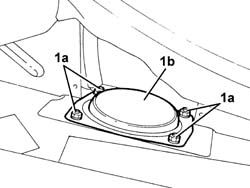
Applies to: engines: 2.5 V6, 3.2 V6; all production periods
1. Working from the passenger compartment, disconnect the rapid attachment for the fuel supply pipe from the submerged pump assembly complete with gauge.
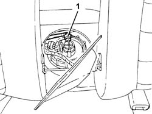
Applies to: engines: 2.5 V6, 3.2 V6; all production periods
1. Position a hydraulic jack under the rear suspension crossmember.
2. Undo the bolts (2a) and lower the rear suspension crossmember (2b), as necessary, using the hydraulic jack.
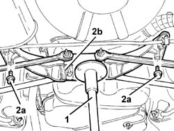
Applies to: engines: 2.5 V6, 3.2 V6; all production periods
1. Position a hydraulic jack under the fuel tank.
2. Undo the bolts securing the fuel tank to the body.
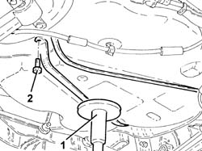
Applies to: engines: 2.5 V6, 3.2 V6; all production periods
1. Undo the bolts securing the heat shield near the fuel tank.
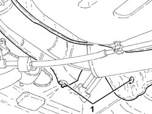
Applies to: engines: 2.5 V6, 3.2 V6; all production periods
Lower the fuel tank as necessary using the hydraulic jack.
1. Disconnect the rear fuel outlet pipe from the front pipe and remove.
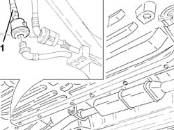
Applies to: engines: 2.5 V6, 3.2 V6; all production periods
Refitting
RemovingRefit the rear fuel delivery pipe in its seat and connect to the front pipe.
Place the fuel tank back in its housing using the hydraulic jack.
Tighten the bolts securing the heat shield near the fuel tank.
Tighten the bolts securing the fuel tank to the body.
Remove the hydraulic jack from under the fuel tank.
1. Replace the rear suspension crossmeber (1a) in its housing using the hydraulic jack (1b) and fix it tightening the bolts (1c) to the recommended torque.
 | Fastening | Component | Ø | Value (daNm) |
|---|---|---|---|---|
1c | Bolt | REAR CROSS-BEAM | M10 | (Bodyshell side) 6.2 ÷ 6.8 |
Remove the hydraulic jack from under the rear suspension crossmember.
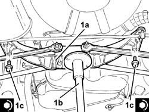
Applies to: engines: 2.5 V6, 3.2 V6; all production periods
Working from the passenger compartment, connect the fuel supply pipe to the submerged pump assembly complete with gauge.
Working from the luggage compartment, place the cover back in its housing and secure it using the nuts.
Continue with refitting 7050B18 rear seat arm rest - r+r
Continue with refitting 7040B10 load platform (luggage platform) trim - r+r
Connect the battery terminal (-).
Remove the car from the ramp.
Applies to: engines: 1.9 JTD 8v , 2.4 JTD 10v; all production periods
Removing
Refitting7050B18 rear seat arm rest - r+r
Make sure that the ignition is off (STOP position), then disconnect the negative battery terminal (refer to op. 5530B10 battery - r+r ).
| Name | Connector |
|---|---|---|
- | Battery |
Position the vehicle on the lift.
1. Undo the nuts (1a) and remove the access cover (1b) to the immersed pump assembly complete with gauge.
2. Disconnect the electrical connection for the immersed pump assembly complete with gauge.
| Name | Connector |
|---|---|---|
2 | Fuel pump and sender unit |
3. Disconnect the coupling for the rear fuel supply pipe from the tank.
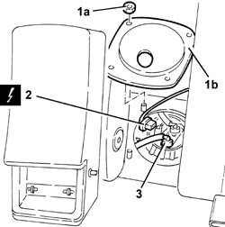
Applies to: engines: 1.9 JTD 8v , 2.4 JTD 10v; all production periods
Remove the handbrake boot.
1. Lift up the handbrake lever (1a), loosen the adjustment nut (1b), then lower the lever.
Raise the car.
Applies to: engines: 1.9 JTD 8v , 2.4 JTD 10v; all production periods
1. Disconnect the handbrake cables (1a) from the mounting bracket (1b) and from the intermediate fixings (1c).
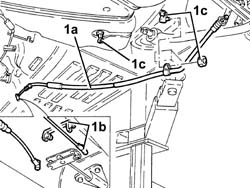
Applies to: engines: 1.9 JTD 8v , 2.4 JTD 10v; all production periods
1. Position a hydraulic jack under the rear suspension crossmember.
2. Undo the bolts (2a) and lower the rear suspension crossmember (2b), as necessary, using the hydraulic jack.
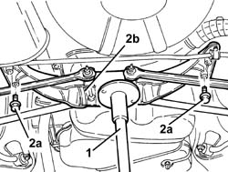
Applies to: engines: 1.9 JTD 8v , 2.4 JTD 10v; all production periods
1. Position a hydraulic jack under the fuel tank.
2. Undo the bolts (2a) and remove the fuel tank support belts (2b).
3. Disconnect the intermediate coupling for the rear fuel supply pipe.
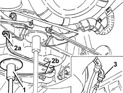
Applies to: engines: 1.9 JTD 8v , 2.4 JTD 10v; all production periods
1. Lower the fuel tank as necessary to remove the rear fuel supply pipe.
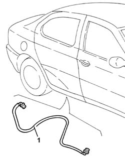
Applies to: engines: 1.9 JTD 8v , 2.4 JTD 10v; all production periods
Refitting
RemovingPlace the rear fuel supply pipe back in its housing and fix it to the bands on the tank.
Connect the intermediate coupling for the rear fuel supply pipe.
Fit the tank support belts and fix them using the bolts.
Remove the hydraulic jack from under the tank.
Place the rear suspension crossmember back in its housing using the hydraulic jack and fix it tightening the bolts to the recommended torque.
| Fastening | Component | Ø | Value (daNm) |
|---|---|---|---|---|
- | Bolt | REAR CROSS-BEAM | M10 | 6.2 - 6.8 |
Remove the hydraulic jack from under the rear suspension crossmember.
Connect the handbrake cables to the mounting bracket and to the intermediate fixings.
Lower the vehicle.
3380A04 handbrake - check travel
Refit the handbrake boot.
Connect the coupling for the rear fuel supply pipe to the tank.
Connect the electrical connection to the immersed pump assembly complete with gauge.
Fit the access cover to the immersed pump assembly complete with gauge and fix it using the nuts.
Remove the vehicle from the ramp.
Connect the negative (-) battery terminal.
Applies to: engines: 1.9 JTD 16v; all production periods
Removing
RefittingPosition the vehicle on the ramp.
Proceed with removal 7050A20 one-piece rear seat cushion - r r .
Proceed with removal 7050B10 l/h or r/h head restraint (one) of rear seat - r+r .
Proceed with removal 7050A19 rear seat squab - r r .
Proceed with removal 7050A10 rear seat - r+r .
Working from the luggage compartment, move the load compartment lining.
1. Remove the plastic buttons (1a) and remove the frame (1b).
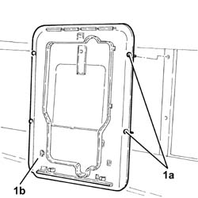
Applies to: engines: 1.9 JTD 16v; all production periods
1. Undo the nuts (1a) and remove the reinforcement bracket (1b).
2. Undo the remaining nuts (2a) and remove the access cover (2b) to the submerged pump assembly complete with level gauge.
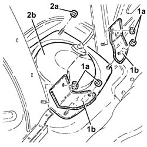
Applies to: engines: 1.9 JTD 16v; all production periods
1. Disconnect the rapid attachment for the rear fuel supply pipe from the immersed pump assembly complete with gauge.
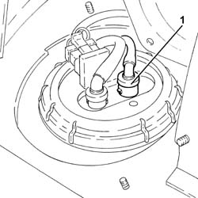
Applies to: engines: 1.9 JTD 16v; all production periods
1. Working from under the car, disconnect the rapid attachment for the rear fuel supply pipe, front fuel supply pipe side and remove.
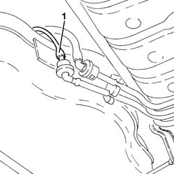
Applies to: engines: 1.9 JTD 16v; all production periods
Refitting
RemovingRefit the rear fuel delivery pipe in its seat and connect to the intermediate fuel delivery pipe using the quick-release connector.
Connect the rapid attachment for the rear fuel supply pipe to the immersed pump assembly complete with gauge.
Fit the access cover to the submerged pump assembly complete with gauge and secure it using the rear bolts.
Place the reinforcement brackets back in their housings and secure them using the nuts.
Place the frame back in its housing and secure it using the plastic studs.
Refit the load compartment lining.
Proceed with refitting 7050A10 rear seat - r+r .
Proceed with refitting 7050A19 rear seat squab - r r .
Proceed with refitting 7050B10 l/h or r/h head restraint (one) of rear seat - r+r .
Proceed with refitting 7050A20 one-piece rear seat cushion - r r .
Applies to: engines: 2.4 JTD 20v; all production periods; only with equipment: Sedan
Removing
RefittingProceed with removal 7050B18 rear seat arm rest - r+r .
Ensure that the ignition key is in the OFF position, then disconnect the negative battery terminal (-).
| Name | Connector |
|---|---|---|
- | Battery |
1. Undo the nuts (1a) and remove the access cover (1b) to the immersed pump assembly complete with gauge.
2. Disconnect the quick-release connector of the rear fuel supply pipe, fuel pump side.
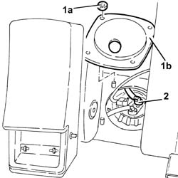
Applies to: engines: 2.4 JTD 20v; all production periods; only with equipment: Station Wagon
Proceed with removal 7040B28 PET transport PROTECTION and load carrying compartment COVER COMBINATION BLIND - R.R. .
Proceed with removal 7040B10 load platform (luggage platform) trim - r+r .
Raise the rear cushion.
1. Undo the rear squab front central retaining bolts.
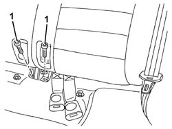
Applies to: engines: 2.4 JTD 20v; all production periods
Lower the left-hand squab.
1. Undo the bolts securing the squabs to the floor.
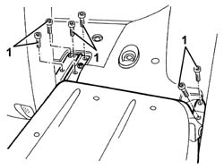
Applies to: engines: 2.4 JTD 20v; all production periods
1. Unscrew the bolt securing the end of the rear central seat belt (only for version with central inertia reel seat belt).
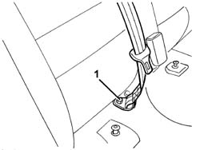
Applies to: engines: 2.4 JTD 20v; all production periods
Lower the right squab.
1. Undo the bolts securing the squab to the floor.
2. Move the squab assembly forward and rest on the seat.
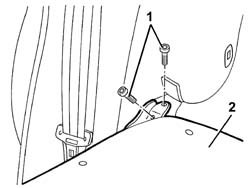
Applies to: engines: 2.4 JTD 20v; all production periods
1. Release the retaining buttons using the special tool.
 | Name | Country |
|---|---|---|
1 | Scraper blade | 1.823.015.000 |
2. Move the trim backward.
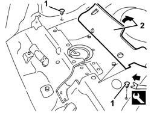
Applies to: engines: 2.4 JTD 20v; all production periods
1. Undo the bolts.
2. Remove the fuel pump cover.
3. Remove the safety clip by pushing back with a screwdriver.
4. Raise retainer (4a) using a screwdriver and disconnect electrical connection (4b).
| Name | Connector |
|---|---|---|
4b | Fuel pump and sender unit |
5. Undo the bolts.
6. Unscrew the nuts.
7. Remove the plate.
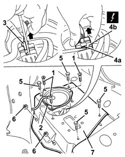
Applies to: engines: 2.4 JTD 20v; all production periods
1. Disconnect the quick-release connector of the rear fuel supply pipe, fuel pump side.
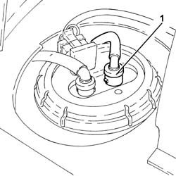
Applies to: engines: 2.4 JTD 20v; all production periods
Remove the handbrake boot.
1. Lift up the handbrake lever (1a), loosen the adjustment nut (1b), then lower the lever.
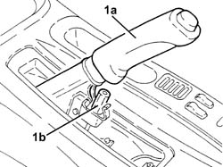
Applies to: engines: 2.4 JTD 20v; all production periods
1. Disconnect the handbrake cables (1a) from the mounting bracket (1b) and from the intermediate fixings (1c).
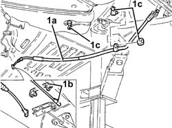
Applies to: engines: 2.4 JTD 20v; all production periods
1. Position a hydraulic jack under the rear suspension crossmember.
2. Undo the bolts (2a) and lower the rear suspension crossmember (2b), as necessary, using the hydraulic jack.
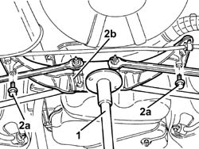
Applies to: engines: 2.4 JTD 20v; all production periods
1. Position a hydraulic jack under the fuel tank.
2. Undo the bolts (2a) and remove the fuel tank support belts (2b).
3. Disconnect the rapid attachment for the rear fuel supply pipe, front fuel supply pipe side.
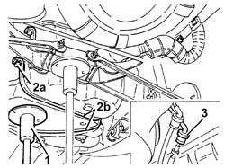
Applies to: engines: 2.4 JTD 20v; all production periods
1. Lower the fuel tank as necessary to remove the rear fuel supply pipe.
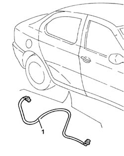
Applies to: engines: 2.4 JTD 20v; all production periods
Refitting
RemovingPlace the rear fuel supply pipe back in its housing and fix it to the bands on the tank.
Connect the rapid attachment for the rear fuel supply pipe, front fuel supply pipe side.
Place the fuel tank support belts back in their housings and secure them using the bolts.
Remove the hydraulic jack from under the tank.
Place the rear suspension crossmember back in its housing using the hydraulic jack and fix it tightening the bolts to the recommended torque.
| Fastening | Component | Ø | Value (daNm) |
|---|---|---|---|---|
- | Bolt | REAR CROSS-BEAM | M10 | (Bodyshell side) 6.2 ÷ 6.8 |
Remove the hydraulic jack from under the rear suspension crossmember.
Connect the handbrake cables to the mounting bracket and to the intermediate fixings.
Proceed with refitting 3380A04 handbrake - check travel .
Place the handbrake boot back in its housing.
Applies to: engines: 2.4 JTD 20v; all production periods; only with equipment: Station Wagon
Connect the quick-release connector of the rear fuel supply pipe, fuel pump side.
Position the plate and secure it using the nuts and bolts.
Connect the electrical connection and secure by engaging the safety retainer.
Position the fuel pump compartment cover and secure it using the bolts.
Fit the trim and engage the retaining buttons.
Position the squab assembly in its seating.
Lower the right squab.
1. Tighten the bolts fixing the squab to the floorl to the recommended torque.
| Fastening | Component | Ø | Value (daNm) |
|---|---|---|---|---|
1 | Bolt | REAR SEAT ASSEMBLY | M8 | 2.4 |
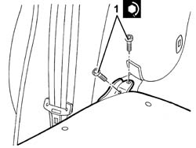
Applies to: engines: 2.4 JTD 20v; all production periods
Raise the right squab.
1. Fit the end of the centre rear seat belt in position and secure by tightening the bolt to the recommended torque (only for the version with seat belt with winder).
| Fastening | Component | Ø | Value (daNm) |
|---|---|---|---|---|
1 | - | REAR SEAT BELT END. | - | 4.0 |
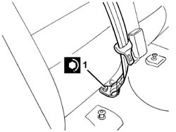
Applies to: engines: 2.4 JTD 20v; all production periods
Lower the left-hand squab.
1. Tighten the bolts securing the squabs to the floor to the specified torque.
| Fastening | Component | Ø | Value (daNm) |
|---|---|---|---|---|
1 | Bolt | REAR SEAT ASSEMBLY | M8 | 2.4 |
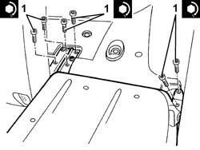
Applies to: engines: 2.4 JTD 20v; all production periods
Raise the left-hand squab.
1. Tighten the front central bolts securing the squabs to the floor to the specified torque.
| Fastening | Component | Ø | Value (daNm) |
|---|---|---|---|---|
1 | Bolt | REAR SEAT ASSEMBLY | M8 | 2.4 |
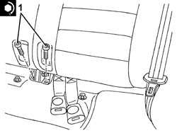
Applies to: engines: 2.4 JTD 20v; all production periods
Check that the engagement device is working properly.
If necessary, adjust the striker 7050A45 STRIKER FOR ATTACHMENT/RELEASE DEVICE for .one( SPLIT rear), seat BACKREST left or right - R.R. .
Lower the rear cushion.
Proceed with refitting 7040B10 load platform (luggage platform) trim - r+r .
Proceed with refitting 7040B28 PET transport PROTECTION and load carrying compartment COVER COMBINATION BLIND - R.R. .
Applies to: engines: 2.4 JTD 20v; all production periods; only with equipment: Sedan
Connect the quick-release connector of the rear fuel supply pipe, fuel pump side.
Fit the access cover to the immersed pump assembly complete with gauge and fix it using the nuts.
Connect the negative (-) battery terminal.
Proceed with refitting 7050B18 rear seat arm rest - r+r .
Topics linked from this page (12)
- 3380A04 handbrake - check travel
- 5530B10 battery - r+r
- 7040B10 load platform (luggage platform) trim - r+r
- 7040B28 PET transport PROTECTION and load carrying compartment COVER COMBINATION BLIND - R.R.
- 7050A10 rear seat - r+r
- 7050A19 rear seat squab - r r
- 7050A20 one-piece rear seat cushion - r r
- 7050A45 STRIKER FOR ATTACHMENT/RELEASE DEVICE for .one( SPLIT rear), seat BACKREST left or right - R.R.
- 7050B10 l/h or r/h head restraint (one) of rear seat - r+r
- 7050B18 rear seat arm rest - r+r
- A1B Battery ( BATTERY NEGATIVE )
- N40 Fuel pump and sender unit